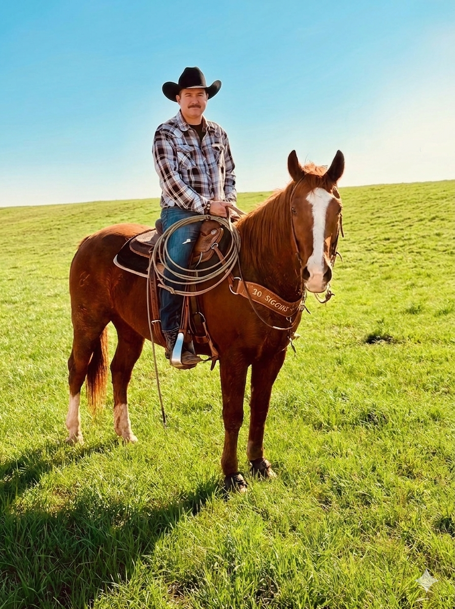

Faith · Grit · Recovery

Powell Parker — Phoenix, Arizona
Managing Member · Rightful Returns Recovery
I didn't start this company from a boardroom — I started it from a deep belief that everyday people deserve to know when the government is holding their money. After years in asset research and financial recovery, I saw the same story over and over: families who had no idea that surplus funds from a foreclosure or tax sale were sitting in a county vault with their name on it.
Rightful Returns Recovery was built on a simple promise: we don't get paid unless you do. No upfront fees. No fine print. Just honest work backed by licensed attorneys, rigorous research, and a personal commitment to every single client.
A portion of every recovery goes to organizations like the Wounded Warrior Project and St. Jude Children's Research Hospital — because when we recover what's rightfully yours, everybody wins.
"We believe this money belongs in the hands of the families it was taken from — not buried in government ledgers."
— Powell Parker, Founder